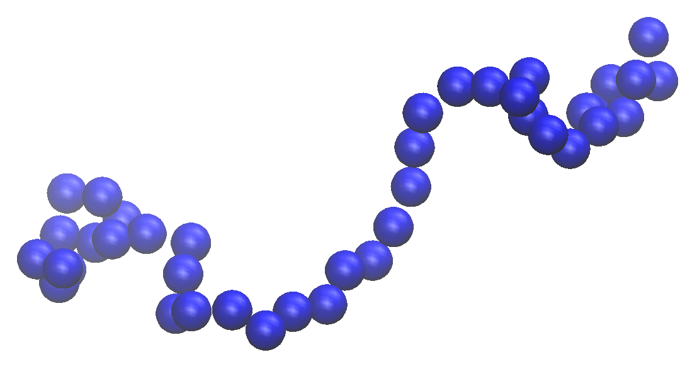
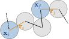
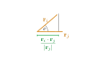
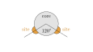
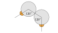
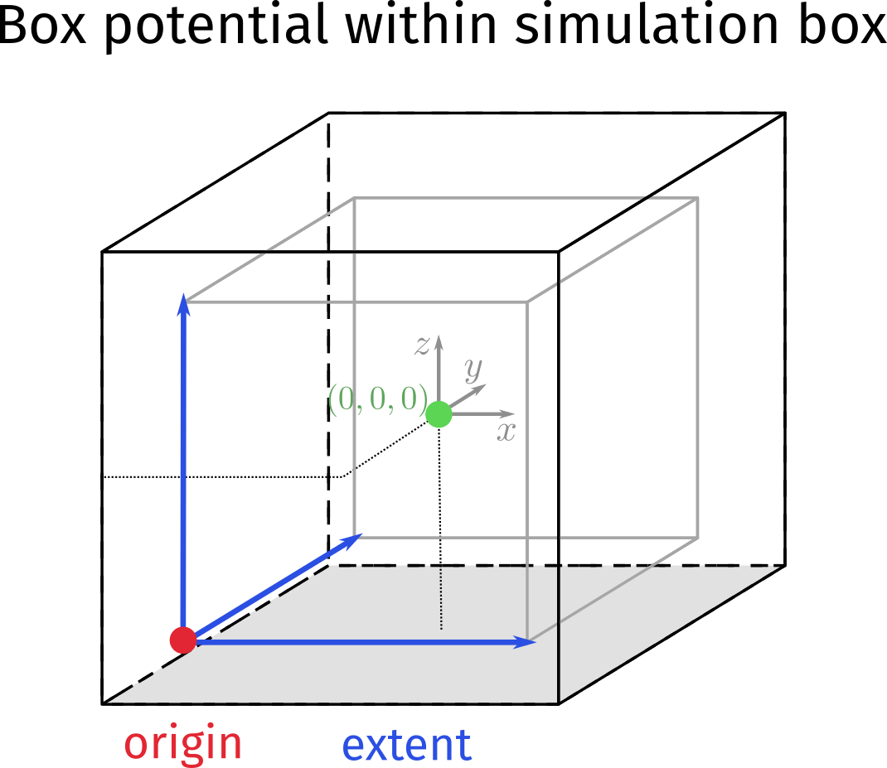

Practical sessions
Here we’ll gather the material and tasks for the daily sessions.
Solutions to tasks we have already done, will be uploaded here
Monday - ReaDDy intro
Task 0) installation
Get miniconda and install it
wget https://repo.continuum.io/miniconda/Miniconda3-latest-Linux-x86_64.sh
bash Miniconda3-latest-Linux-x86_64.sh
Check your quota -s. If your home directory is limited in space, you might want to install it under storage, i.e. when prompted for install location, choose either /home/mi/user/miniconda3 or /storage/mi/user/miniconda3 (replace user with your username). Your ~/.bashrc should contain the line
. /storage/mi/user/miniconda3/etc/profile.d/conda.sh
to enable the conda command. If you try out which conda, you should see its function definition, and you’re good to go.
Create a conda environment workshop
conda create -n workshop
and activate it.
conda activate workshop
Add conda-forge as default channel
conda config --add channels conda-forge --env
and install the latest readdy in it
(workshop) $ conda install -c readdy/label/dev readdy
Check if it worked, start a python interpreter and do
import readdy
print(readdy.__version__)
If this does not return an error, you are ready to readdy (almost).
Make sure you also have vmd installed. It should be installed on the universities machines.
Task 1) Python, ipython notebook, numpy, matplotlib crash course
Follow along the ipython-intro. You should be able to reproduce the presented usage in your own ipython notebook. The notebook covers the following:
- usage of an ipython notebook
- filesystem operations with
os - save and load data objects with
pickle - numerical operations with
numpy - plotting with
matplotlib.pyplot
Task 2) ReaDDy intro I: Particles, diffusion and potentials
Follow along the readdy-intro. You should be able to reproduce the presented usage in your own ipython notebook. The notebook covers the following:
- principle workflow of readdy:
systemandsimulation - adding particle species to
system - adding potentials to
system - spatial layout of simulation box and box potentials
- adding particle instances at given positions to
simulation - convert trajectory output to VMD viewable format
Task 3) ReaDDy intro II: Reactions, observables and checkpoints
Follow along the readdy-observables The notebook covers the following:
- adding reaction to
system - adding observable to
simulation - reading back the observable from trajectory file
- using checkpoints to continue a simulation
Task 4) Crowded mixture, MSD
The time dependent mean squared displacement (MSD) is defined as
where $\mathbf{x}_t$ is the position of a particle at time $t$, and $\mathbf{x}_0$ is its initial position. The difference of these is then squared, yielding a squared travelled distance. This quantity is then averaged over all particles.
The task is to set up a crowded mixture of particles and measure the MSD. There is one species A with diffusion coefficient 0.1. The simulation box shall be $20\times20\times20$ and non-periodic, i.e. define a box potential that keeps particles inside, e.g. with an extent $19\times19\times19$ and appropriate origin.
Define a harmonic repulsion between A particles with force constant 100 and interaction distance 2.
Add 1000 A particles to the simulation, uniformly distributed within the box potential.
Observe the positions of particles with a stride of 1.
Run the simulation with a time step size of 0.01 for 20000 steps.
In the post-processing you have to calculate the MSD from the observed positions. Implement the following steps:
- Convert positions list into numpy array $T\times N\times3$
- From every particles position subtract the initial position
- Square this
- Average over particles
np.mean(...)
Since the positions observable returns a list of list, it might come in handy to convert this to a numpy array of shape $T\times N\times3$ (step 1). You may use the following brute force method to do this
T = len(positions)
N = len(positions[0])
pos = np.zeros(shape=(T, N, 3))
for t in range(T):
for n in range(N):
pos[t, n, 0] = positions[t][n][0]
pos[t, n, 1] = positions[t][n][1]
pos[t, n, 2] = positions[t][n][2]
You shall implement steps 2.-4. by yourself.
4a) Finally plot the MSD as a function of time in a log-log plot, let’s call this the crowded result. (Hint: You may find that there is an initial jump in the squared displacements. Equilibrating the particle positions before starting the measurement may help you there. Make use of checkpointing to use an already equilibrated state)
4b) Repeat the whole procedure, but do not register the harmonic repulsion between particles, this shall be the free result. Compare the MSD to the previous result, possibly in the same plot.
4c) Additionally plot the analytical solution for freely diffusing particles
From your resulting plot identify “finite size saturation”, “subdiffusion”, “reduced normal diffusion”, “ballistic/normal diffusion”
Task 5) Crowded mixture, RDF
The radial distribution function (RDF) $g(r)$ describes how likely it is to find two particles at distance $r$. Compare the RDF of harmonically repelling particles and the RDF of non-repelling particles.
Therefore set up the same system as in Task 4) but this time the system shall be periodic and there is no box potential.
You may want to equilibrate the initial particle positions, use checkpointing.
Instead of observing the particle positions, observe the radial distribution function
simulation.observe.rdf(stride=1000, bin_borders=np.arange(0.,10.,0.2),
types_count_from="A", types_count_to="A",
particle_to_density=n_particles/system.box_volume)
In the post-processing, you shall use
_, bin_centers, distribution = traj.read_observable_rdf()
to obtain the observable. The distribution contains multiple $g(r)$, one for each time it was recorded. Average them over time.
5a) Plot the RDF as a function of the distance (i.e. meandistribution as function of bin_centers)
5b) Perform the same procedure but for non-interacting particles, compare with the previous result, preferably in the same plot. What are your observations?
Tuesday
This session will cover a well studied reaction diffusion system, the Lotka Volterra system, that describes a predator prey dynamics. We will investigate how parameters in these system affect spatiotemporal correlations.
Task 1) Diffusion influenced reaction
Consider the reaction
The reaction distance should be $R=1$.
Set up a periodic box with dimensions $20\times20\times20$
Add 1000 A particles with $D=1$. The diffusion constant of B should be $D=1$. They should be uniformly distributed in the box, use
n_particles = 1000
init_pos = np.random.uniform(size=(n_particles,3)) * extent + origin
simulation.add_particles("A", init_pos)
Observe the number of particles with a stride of 1. Additionally you can print the current number of particles using the callback functionality
simulation.observe.number_of_particles(
1, ["A","B"],
callback=lambda x: print("A {}, B {}".format(x[0],x[1]))
)
Simulate the system for 10000 steps with time step size 0.01.
1a) Obtain the number of particles and plot them as a function of time.
The analytic solution of the concentration of particles subject to the reaction above is obtained by solving the ODE
which yields
1b) Fit the function $a(t)$ to your counts data, to obtain the parameter $k$. For $a_0$ use n_particles. Make use of scipy.optimize.curve_fit. Can the function $a(t)$ describe the data well?
1c) Repeat the procedures a) and b) but change the diffusion coefficient to $D=0.01$ and change the microscopic reaction rate to $\lambda=1$. What happened to your fit?
Task 2) well mixed predatory-prey
Simulate a Lotka-Volterra/predator-prey system for the given parameters and determine the period of oscillation.
There are two particle species A (prey) and B (predator) with the same diffusion coefficient $D=0.7$. Both particle species shall be confined to a quadratic 2D plane with an edge length of roughly 50, and non periodic boundaries, i.e. the 2D plane must be fully contained in the simulation box. Choose a very small thickness for the plane, e.g. 0.02, and a force constant of 50.
Particles of the same species interact via harmonic repulsion, with a force constant of 50, and an interaction distance of 2.
There are three reactions for the Lotka Volterra system: birth, eat, and decay.
Initialize a system by randomly positioning 250 particles of each species on the 2D plane. Run the simulation for 100,000 integration steps with a step size of 0.01. Observe the number of particles and the trajectory, with a stride of 100.
From the observable, plot the number of particles for the two species as a function of time in the same plot. Make sure to label the lines accordingly. Additionally plot the phase space trajectory, i.e. plot the number of predator particles against the number of prey particles.
Question: What is the period of oscillation?
Task 3) diffusion influenced predator-prey
We simulate the same system as in Task 2) but now introduce a scaling parameter $\ell$. This scaling parameter is used to control the ratio of reaction rates $\lambda$ and the rate of diffusion $D$.
For a given parameter $\ell$
- change all reaction rate constants $\tilde\lambda=\lambda\times\sqrt{\ell}$.
- change all diffusion coefficients $\tilde D= D/\sqrt{\ell}$.
where the tilde ~ denotes the actually used value in the simulation and the value without tilde is the one from Task 1).
This means that the ratio
is controlled by $\ell$.
Perform the same simulation as in Task 1) but for different scaling parameters $\ell$, each time saving the resulting plots (time series and phase plot) to a file, use plt.savefig(...). Run each simulation for $n$ number of integration steps, where
Vary the scaling parameter from 1 to 400.
Question: For which $\ell$ do you see a qualitative change of behavior in the system, both from looking at the plots and the VMD visualization? Which cases are reaction-limited and which cases are diffusion-limited?
Task 4)
Starting from the parameters of a diffusion influenced system from Task 3), set up a simulation, where prey particles form a traveling wavefront, closely followed by predators. Therefore you might want to change the simulation box and box potential parameters to get a 2D rectangular plane.
Feel free to adjust all parameters. You can experiment with other spatial patterns as well, have a look at this paper.
Wednesday

This session will cover macromolecules and their dynamics. In particular we want to model short RNA chains, represented by linear chains of beads.
Assume $N$ beads of particles at positions $\mathbf{x}_i$, the $i$th bead is connected with the $i+1$th bead by a spring which has a fixed length $l$. Thus the whole chain of particles is linearly connected. The vector $\mathbf{r}_i=\mathbf{x}_{i+1}-\mathbf{x}_i$ is the segment that connnects adjacent beads.

One can measure how strongly the $i$th and the $j$th segment correlate by considering the scalar product $\mathbf{r}_i\cdot\mathbf{r}_j$.

Since this value alone is quite meaningless, one can consider its average over a whole ensemble of segments. This average can be taken over all segments, i.e. $\forall i,j$ in the linear chain, and also over many times if the linear chain evolves over time. For realistic polymers one typically observes that the $i$th segment strongly correlates with the $j=i+1$th segment. However for $j\gg i$ the correlation vanishes. Phenomenologically this is understood by an exponential decay of the correlation
where we have defined the persistence length $l_p$. The value of $l_p$ is determined by the interaction of the beads. For example structured RNA molecules typically show a persistence length of 72nm. Today we will instead model unstructed RNA molecules, which show a persistence length of roughly 2nm.
We will consider two models for the polymer, namely
- the freely jointed chain (FJC), and
- the freely rotating chain (FRC).
In the FJC, the beads are connected by segments of fixed length $l=0.48$. Other than that there is no interaction.
In the FRC, the beads are also connected by segments of fixed length $l=0.48$. Additionally the angle between neighbouring segments is fixed to $\theta=35^\circ$.
Task 1) Equilibrate polymers
In the first task you will
- a) equilibrate a freely jointed chain (FJC) of $N=50$ beads. Equilibration is ensured by measuring the radius of gyration of a polymer over time.
- b) Once the polymer is equilibrated, you will measure the persistence length $l_p$.
- c) Repeat a) and b) for the freely rotating chain (FRC)
We will only need one particle species monomer with diffusion constant $D=0.1$. Note that this will not be a normal species but will be a topology species:
system.add_topology_species("monomer", 0.1)
The simulation box shall have box_size= [102.,102.,102.], and be non-periodic. This means that there has to be a box potential registered for the type monomer with force constant 50, origin=np.array([-50,-50,-50]) and extent=np.array([100,100,100]).
In order to build a polymer we use topologies. At first we need to register a type of toplogy
system.topologies.add_type("polymer")
The monomers in a polymer must be held together by harmonic bonds, defined by pairs of particle types
system.topologies.configure_harmonic_bond(
"monomer", "monomer", force_constant=50., length=0.48)
Only in the case of a FRC we also specify an angular potential, that is defined for a triplet of particle types
system.topologies.configure_harmonic_angle(
"monomer", "monomer", "monomer", force_constant=20.,
equilibrium_angle=(180.-35.)/180.*np.pi)
where an equilibrium_angle is given in radians (Note that the equilibrium angle here is not the same as the $\theta$ as defined above, thus the conversion by 180 degrees).
The next step is creating the simulation. Then we specify the observables, the trajectory and the particle positions
simulation.record_trajectory(stride=10000)
simulation.observe.particle_positions(stride=1000)
We also want to make use of checkpointing to continue simulation for an already equilibrated polymer. If there are no checkpoints, we want to create new positions for the polymer. The new positions represent a random walk in three dimensions with fixed step length bond_length.
if os.path.exists(checkpoint_dir):
# load checkpoint
simulation.load_particles_from_latest_checkpoint(checkpoint_dir)
else:
# new positions
init_pos = [np.zeros(3)]
for i in range(1, chain_length):
displacement = np.random.normal(size=(3))
displacement /= np.sqrt(np.sum(displacement * displacement))
displacement *= bond_length
init_pos.append(init_pos[i - 1] + displacement)
init_pos = np.array(init_pos)
# subtract center of mass
init_pos -= np.mean(init_pos, axis=0)
# add all particles for the topology at once
top = simulation.add_topology("polymer", len(init_pos) * ["monomer"], init_pos)
# set up the linear connectivity
for i in range(1, chain_length):
top.get_graph().add_edge(i - 1, i)
# this also creates the directory
simulation.make_checkpoints(n_steps // 100,
output_directory=checkpoint_dir, max_n_saves=10)
Tip: Keep two separate checkpoint directories output files and for the FJC and the FRC model. This means you may want to have the following defined in the beginning of your notebook
chain_type = "fjc" # fjc or frc
out_dir = "/some/place/on/your/drive"
out_file = os.path.join(out_dir, f"polymer_{chain_type}.h5")
checkpoint_dir = os.path.join(out_dir, f"ckpts_{chain_type}")
Now that we have defined the simulation object we can run the simulation
if os.path.exists(simulation.output_file):
os.remove(simulation.output_file)
simulation.run(n_steps, dt)
and also observe the output
traj = readdy.Trajectory(out_file)
traj.convert_to_xyz(
particle_radii={"monomer": bond_length / 2.},
draw_box=True)
1a) The radius of gyration is a measure of how ‘extended’ in space a polymer is. To calculate it, we must have observed the particle positions. As a first step we convert the readdy output to a numpy array
times, positions = traj.read_observable_particle_positions()
# convert to numpy array
T = len(positions)
N = len(positions[0])
pos = np.zeros(shape=(T, N, 3))
for t in range(T):
for n in range(N):
pos[t, n, 0] = positions[t][n][0]
pos[t, n, 1] = positions[t][n][1]
pos[t, n, 2] = positions[t][n][2]
Then from the pos array you may use the following to calculate the radius of gyration (the assertion statements may help you understand how the arrays are shaped)
# calculate radius of gyration
mean_pos = np.mean(pos, axis=1)
difference = np.zeros_like(pos)
for i in range(n_particles):
difference[:,i] = pos[:,i] - mean_pos
assert difference.shape == (T,N,3)
# square and sum over coordinates (axis=2)
squared_radius_g = np.sum(difference * difference, axis=2)
assert squared_radius_g.shape == (T,N)
# average over particles (axis=1)
squared_radius_g = np.mean(squared_radius_g, axis=1)
radius_g = np.sqrt(squared_radius_g)
assert radius_g.shape == times.shape == (T,)
Plot the radius of gyration as a function of time, is it equilibrated? If not, simulate for a longer time.
1b) The mean correlation of segments $\langle \mathbf{r}_i\cdot\mathbf{r}_j \rangle$ shall be calculated from the pos array. You will average over all pairs of the linear chain and also over all times.
Use the following snippet to calculate the segments vector
assert pos.shape == (T, N, 3)
# calculate segments
segments = pos[:, 1:, :] - pos[:, :-1, :]
The correlation between $i$ and $j$ shall be measured as a function of their separation $s=\mid j-i\mid$, which is a value between 0 and $N-1$, e.g.
n_beads = pos.shape[1]
separations = np.arange(0, n_beads - 1, 1)
corrs = None # your task
Now for every separation $s$, calculate the average correlation, averaged over all pairs $(i,j)$ that lead to $s=\mid j-i\mid$.
Hints:
-
The calculation may involve a double loop over all segments
for i in range(n_beads-1): for j in range(i, n_beads-1): # something -
The scalar product of the $i$th and the $j$th bead for all times is
np.sum(segments[:, i, :] * segments[:, j, :], axis=1)where the summation over
axis=1is over the x,y,z coordinates
Then plot the mean correlation as a function of the separation. What do you observe?
To determine the persistence length $l_p$, fit a function of the form
to the data using scipy.optimize.curve_fit. From the constant $c_2$ you should be able to obtain the persistence length. What is its value?
1c) Repeat a) and b) for the FRC. Note the value for $l_p$ for both models.
Given the values in the introduction text, which of the models (FJC, FRC) is better suited to model unstructured RNA?
Task 2) Identify given structures
Obtain the two data files a.npy and b.npy and save them to a directory of your liking. Each of them contains 100 positions of beads, i.e. a and b are two polymer configurations. You can load them as follows
a = np.load("a.npy")
b = np.load("b.npy")
assert a.shape == (100, 3)
assert b.shape == (100, 3)
Your task is to identify which of them is the FJC model and which is the FRC model, from what you’ve learned in task 1.
Task 3) First-passage times of finding target
You shall now use the configuration x.npy (where x is either a or b)from task 2 that corresponds to the FRC, to set up another simulation, in which one bead of the polymer is of target type. Freely diffusing A particles have to find the target particle. The application you should have in mind is proteins docking to a certain part of nucleid acids, which is crucial for the function of each biological cell. To determine when an A particle has found the target we implement the following kind of reaction
The time when the first B particle is created, then corresponds to the first-passage time of that reaction.
3a) Perform a simulation that initializes the polymer from x.npy where the 10th bead is of type target, and places 50 A particles normally distributed (with variance $\sigma=0.5$) around the origin.
Therefore use the following system configuration
system = readdy.ReactionDiffusionSystem(
box_size=[16., 16., 16.],
periodic_boundary_conditions=[False, False, False],
unit_system=None)
system.add_topology_species("monomer", 0.1)
system.add_topology_species("target", 0.1)
system.add_species("A", 0.5)
system.add_species("B", 0.5)
system.topologies.add_type("polymer")
origin = np.array([-7.5, -7.5, -7.5])
extent = np.array([15., 15., 15.])
system.potentials.add_box("monomer", force_constant=50., origin=origin, extent=extent)
system.potentials.add_box("target", force_constant=50., origin=origin, extent=extent)
system.potentials.add_box("A", force_constant=50., origin=origin, extent=extent)
system.potentials.add_box("B", force_constant=50., origin=origin, extent=extent)
with the following topology potentials
system.topologies.configure_harmonic_bond(
"monomer", "monomer", force_constant=50., length=bond_length)
system.topologies.configure_harmonic_bond(
"monomer", "target", force_constant=50., length=bond_length)
system.topologies.configure_harmonic_angle(
"monomer", "monomer", "monomer", force_constant=20.,
equilibrium_angle=2.530727415391778)
system.topologies.configure_harmonic_angle(
"monomer", "monomer", "target", force_constant=20.,
equilibrium_angle=2.530727415391778)
system.topologies.configure_harmonic_angle(
"monomer", "target", "monomer", force_constant=20.,
equilibrium_angle=2.530727415391778)
Define a boolean flag interaction = True.
If the bool interaction is True then there should be a weak interaction between A and monomer particles with a force_constant of 50, desired_distance=bond_length, a depth of 1.4, and a cutoff of 2.2*bond_length.
What does such an interaction result in?
Additionally there will be repulsion potentials between monomers and between A particles.
system.potentials.add_harmonic_repulsion(
"monomer", "monomer", force_constant=50.,
interaction_distance=1.1*bond_length)
system.potentials.add_harmonic_repulsion(
"A", "A", force_constant=50., interaction_distance=1.5*bond_length)
Finally the system needs the reaction
system.reactions.add("found: A +(0.48) target -> B + target", rate=10000.)
where we use a very high rate, such that the reaction will happen directly on contact, where 0.48 is the contact distance.
Observe the number of B particles with a stride of 1.
Load the polymer configuration and turn the 10th monomer into a target.
init_pos = np.load("x.npy")
types = len(init_pos) * ["monomer"]
types[10] = "target" # define the target to be the 10-th monomer
top = sim.add_topology("polymer", types, init_pos)
for i in range(1, len(init_pos)):
top.get_graph().add_edge(i - 1, i)
Place 50 A particles normally distributed, with variance $\sigma=0.5$, around the origin.
Simulate the system with a timestep of 0.001 for 30000 steps. Have a look at the VMD output.
- How do the
Aparticles interact with the polymer? - Calculate the first passage time from the observed number of particles, i.e. the time when the first
Bwas created.
3b) Combine the simulation procedure above into a function of the signature
def find_target(interaction=False):
...
# Since we will run many simulations
# you may want to supress the textual output by
# setting the two options show_progress
# and show_summary
sim.show_progress = False
sim.run(..., show_summary=False)
...
return passage_time
Hint: One such simulation should not take much longer than 10 seconds.
Gather passage times in a list
ts_int = []
Repeat the simulation many times (50-100 should suffice) and append the result to the list.
from tqdm import tqdm_notebook as tqdm
n=50
for _ in tqdm(range(n)):
ts_int.append(find_target(interaction=True))
As this might take a while, you will want to observe how long the whole process takes, which is done here using tqdm.
Do the same for the case of no interaction, i.e. set interaction=False and gather the results in another list ts_noint.
ProTip: To save computation time, run this second case in a copy of your notebook (i.e. at the same time) and save the resulting list ts_noint into a pickle file, which you can read in in the original notebook.
For both cases interaction=True and interaction=False, calculate the distribution of first passage times, i.e. plot a histogram of the lists you constructed using plt.hist(). Use bins=np.logspace(0,2,20) and density=True.
When assuming a memory less (Poisson) process, the only relevant parameter is the mean rate $\lambda=N/\sum_{i=1}^N\tau_i$. Plot the distribution of first-passage-times with mean rate $\lambda$, i.e. the Poisson probability density (not the cumulative) of 1 event occurring before time t. Compare against your measured distribution of waiting times?
Is the process of finding the target with or without interaction well suited to be modeled as a memory-less process?
Now additionally mark the mean first passage time for each case using plt.vlines(). Is the difference of the two cases well described by the mean first passage time?
Thursday
This session will deal with the self assembly of macromolecular structures due to reactions.
Task 1) linear filament (e.g. actin) assembly

In this task we will look at a linear polymer chain, but instead of placing all beads initially, we will let it self-assemble from monomers in solution. The polymer that we will build will have the following structure
head--core--(...)--core--tail
where (...) means that there can be many core particles, but the structure is always linear.
The simulation box is periodic with box_size=[20., 20., 20.].
We define three topology particle species and one normal particle species
system.add_species("substrate", 0.1)
system.add_topology_species("head", 0.1)
system.add_topology_species("core", 0.1)
system.add_topology_species("tail", 0.1)
We also define one topology type
system.topologies.add_type("filament")
There should be the following potentials for topology particles
system.topologies.configure_harmonic_bond(
"head", "core", force_constant=100, length=1.)
system.topologies.configure_harmonic_bond(
"core", "core", force_constant=100, length=1.)
system.topologies.configure_harmonic_bond(
"core", "tail", force_constant=100, length=1.)
The polymer should be rather stiff, which is the case for Actin filaments in biological cells. We can compactly write this for all triplets of particle types:
triplets = [
("head", "core", "core"),
("core", "core", "core"),
("core", "core", "tail"),
("head", "core", "tail")
]
for (t1, t2, t3) in triplets:
system.topologies.configure_harmonic_angle(
t1, t2, t3, force_constant=50.,
equilibrium_angle=np.pi)
We now introduce a topology reaction. They allow changes to the graph of a topology in form of a reaction. Here we will use the following definition.
system.topologies.add_spatial_reaction(
"attach: filament(head) + (substrate) -> filament(core--head)",
rate=5.0, radius=1.5
)
Using the documentation, familiarize yourself, what this means. Do not hesitate to ask, since topology reactions can become quite a tricky concept!
Next create a simulation object. We want to observe the following
simulation.record_trajectory(stride=100)
simulation.observe.topologies(stride=100)
Add one filament topology to the simulation
init_top_pos = np.array([
[ 1. ,0. ,0.],
[ 0. ,0. ,0.],
[-1. ,0. ,0.]
])
top = simulation.add_topology(
"filament", ["head", "core", "tail"], init_top_pos)
top.get_graph().add_edge(0, 1)
top.get_graph().add_edge(1, 2)
Additionally we need substrate particles, that can attach themselves to the filament
n_substrate = 300
origin = np.array([-10., -10., -10.])
extent = np.array([20., 20., 20.])
init_pos = np.random.uniform(size=(n_substrate,3)) * extent + origin
simulation.add_particles("substrate", positions=init_pos)
Then, run the simulation
if os.path.exists(simulation.output_file):
os.remove(simulation.output_file)
dt = 5e-3
simulation.run(400000, dt)
One important observable will be the length of the filament as a function of time. It can be obtained from the trajectory as follows:
times, topology_records = traj.read_observable_topologies()
chain_length = [ len(tops[0].particles) for tops in topology_records ]
The last line is a list comprehension. tops is a list of topologies for a given time step. Hence, tops[0] is the first (and in this case, the only) topology in the system. tops[0].particles is a list of particles belonging to this topology. Thus, its length yields the length of the filament.
1a) Have a look at the VMD output. Describe what happens? Additionally plot the length of the filament as a function of time. Note that you shall now plot the simulation time and not the time step indices, i.e. do the following
times = np.array(times) * dt
where dt is the time step size.
1b) Using your data of the filament-length, fit a function of the form
to your data. You should use scipy.optimize.curve_fit to do so
import scipy.optimize as so
def func(t, a, b):
return a*(1. - np.exp(-b * t)) + 3.
popt, pcov = so.curve_fit(func, times, chain_length)
print("popt", popt)
print("pcov", pcov)
f = lambda t: func(t, popt[0], popt[1])
plt.plot(times, chain_length, label="data")
plt.plot(times, f(times), label=r"fit $f(t)=a(1-e^{-bt})+3$")
plt.xlabel("Time")
plt.ylabel("Filament length")
plt.legend()
plt.show()
Question: Given the result of the fitting parameters
- How large is the equilibration rate?
- What will be the length of the filament for $t\to\infty$?
1c) We now introduce a disassembly reaction for the tail particle. This is done by adding the following to your system configuration.
def rate_function(topology):
"""
if the topology has at least (head, core, tail)
the tail shall be removed with a fixed probability per time
"""
vertices = topology.get_graph().get_vertices()
if len(vertices) > 3:
return 0.05
else:
return 0.
def reaction_function(topology):
"""
find the tail and remove it,
and make the adjacent core particle the new tail
"""
recipe = readdy.StructuralReactionRecipe(topology)
vertices = topology.get_graph().get_vertices()
tail_idx = None
adjacent_core_idx = None
for v in vertices:
if topology.particle_type_of_vertex(v) == "tail":
adjacent_core_idx = v.neighbors()[0].get().particle_index
tail_idx = v.particle_index
recipe.separate_vertex(tail_idx)
recipe.change_particle_type(tail_idx, "substrate")
recipe.change_particle_type(adjacent_core_idx, "tail")
return recipe
system.topologies.add_structural_reaction(
"detach",
"filament",
reaction_function=reaction_function,
rate_function=rate_function)
Familiarize yourself with this kind of structural topology reaction
Repeat the same analysis as before, and also observe your VMD output.
- How large is the equilibration rate?
- What will be the length of the filament for $t\to\infty$?
Task 2) Assembly of virus capsids

This task will suggest a model for the assembly of monomers into hexamers, and in the bonus task: the assembly of these hexamers into even larger superstructures.
First we need a model for one monomer, which should look as follows

It is essentially one bigger core particle with two sites attached. This is sometimes called a patchy particle, i.e. a particle with reaction patches. In the language of ReaDDy, this group of particles is a topology, let’s give it the name CA
system.topologies.add_type("CA")
system.add_topology_species("core", 0.1)
system.add_topology_species("site", 0.1)
The angle between the triplet site--core--site, shall be fixed to 120°. The sites shall react with the sites of other monomers to form a dimer that looks like

For this dimer, the four particles shall be confined to a single 2D plane, which we do using topology potentials. Summarizing all potentials that you need to configure for the particles:
- harmonic bond between
core--sitewith force constant 100 and length 1 - harmonic bond between
core--corewith force constant 100 and length 2 - harmonic bond between
site--sitewith force constant 100 and length 0.1 - harmonic angle between
site--core--sitewith force constant 200 and equilibrium angle 120 degrees - harmonic angle between
site--core--corewith force constant 200 and equilibrium angle 120 degrees - harmonic angle between
core--core--corewith force constant 200 and equilibrium angle 120 degrees - dihedral between
core--core--core--corewith force constant 200, mutliplicity of 1 and equilibrium angle of 0 - dihedral between
site--core--core--corewith force constant 200, mutliplicity of 1 and equilibrium angle of 0 - dihedral between
site--core--core--sitewith force constant 200, mutliplicity of 1 and equilibrium angle of 0 - (normal) harmonic repulsion between
coreandcorewith force constant 80 and interaction distance 2
The formation of the dimer will be done using a spatial topology reaction
of the form
system.topologies.add_spatial_reaction(
"attach: CA(site)+CA(site)->CA(site--site) [self=true]", rate=10., radius=0.4)
After such a reaction the connectivity looks like (...)--core--site--site--core--(...). In a second step after the reaction we want to get rid of the two site particles in the middle. This will be done using a structural topology reaction of the following kind (make sure that you understand what happens in these code snippets. Do ask, if you have problems understanding!). The first ingredient is the rate function for the structural reaction, i.e. given a toplogy this function shall return a very high rate, if there is a site--site connection, and shall return 0 otherwise
def clean_sites_rate_function(topology):
edges = topology.get_graph().get_edges()
vertices = topology.get_graph().get_vertices()
if len(vertices) > 3:
for e in edges:
v1_ref, v2_ref = e[0], e[1]
v1 = v1_ref.get()
v2 = v2_ref.get()
v1_type = topology.particle_type_of_vertex(v1)
v2_type = topology.particle_type_of_vertex(v2)
if v1_type == "site" and v2_type == "site":
return 1e12
else:
return 0.
return 0.
The second ingredient is the reaction function, that performs the removing of the two site particles, after the rate function has returned a very high rate
def clean_sites_reaction_function(topology):
recipe = readdy.StructuralReactionRecipe(topology)
vertices = topology.get_graph().get_vertices()
def search_configuration():
# dfs for finding configuration core-site-site-core
for v1 in vertices:
if topology.particle_type_of_vertex(v1) == "core":
for v2_ref in v1.neighbors():
v2 = v2_ref.get()
if topology.particle_type_of_vertex(v2) == "site":
for v3_ref in v2.neighbors():
v3 = v3_ref.get()
if v3.particle_index != v1.particle_index:
if topology.particle_type_of_vertex(v3) == "site":
for v4_ref in v3.neighbors():
v4 = v4_ref.get()
if v4.particle_index != v2.particle_index:
if topology.particle_type_of_vertex(v4) == "core":
return v1.particle_index, v2.particle_index, v3.particle_index, v4.particle_index
core1_p_idx, site1_p_idx, site2_p_idx, core2_p_idx = search_configuration()
# find corresponding vertex indices from particle indices
core1_v_idx = None
site1_v_idx = None
site2_v_idx = None
core2_v_idx = None
for i, v in enumerate(vertices):
if v.particle_index == core1_p_idx and core1_v_idx is None:
core1_v_idx = i
elif v.particle_index == site1_p_idx and site1_v_idx is None:
site1_v_idx = i
elif v.particle_index == site2_p_idx and site2_v_idx is None:
site2_v_idx = i
elif v.particle_index == core2_p_idx and core2_v_idx is None:
core2_v_idx = i
else:
pass
if (core1_v_idx is not None) and (core2_v_idx is not None) and (site1_v_idx is not None) and (
site2_v_idx is not None):
recipe.add_edge(core1_v_idx, core2_v_idx)
recipe.separate_vertex(site1_v_idx)
recipe.separate_vertex(site2_v_idx)
recipe.change_particle_type(site1_v_idx, "dummy")
recipe.change_particle_type(site2_v_idx, "dummy")
else:
raise RuntimeError("core-site-site-core wasn't found")
return recipe
Finally add the structural reaction to the system
system.topologies.add_structural_reaction(
"clean_sites", topology_type="CA",
reaction_function=clean_sites_reaction_function,
rate_function=clean_sites_rate_function,
raise_if_invalid=True,
expect_connected=False)
2a) Simulate the system described above in a periodic box of size [25, 25, 25] for n_steps=50000 steps with a timestep of 0.005. Initially place 150 CA patchy particles uniformly distributed in the box. While simulating, observe the trajectory and topologies with the same stride.
sim.record_trajectory(n_steps//2000)
sim.observe.topologies(n_steps//2000)
What do you observe in the VMD output? Do particles assemble in the way you expected?
Hints:
-
You should place the particles such that the
siteparticles are already at their prescribed 120 degree angle and a distance of 1 away from thecoreparticle. Adding one such particle can be done in the following waycore = np.array([0., 0., 0.]) site1 = np.array([0., 0., 1.]) site2 = np.array([np.sin(np.pi * 60. / 180.), 0., - 1. * np.cos(np.pi * 60. / 180.)]) top = sim.add_topology("CA", ["site", "core", "site"], np.array([site1, core, site2])) top.get_graph().add_edge(0, 1) top.get_graph().add_edge(1, 2) - To distribute the particles uniformly you should add a random translation vector to all positions
core,site1andsite2. - If you want to be super cool, you can rotate the patchy particle by a random amount before translating it. Ask google how to generate a random rotation matrix and how to apply it to your vectors
core,site1andsite2
2b) From your output file and using the topologies and trajectory observable, calculate the time dependent distribution of molecular mass. This means: Given an instance of a topology, the degree of polymerization is the number of connected core particles in this topology. For one polymer the molecular mass is equal to the degree of polymerization. Obtain such a value for all topologies in a given timestep and make a histogram of that. Now that histogram only counts the occurrence of how many times a topology with a certain molecular mass shows up. To convert that into a distribution of molecular mass itself, you have to multiply the number of occurrence for each degree of polymerization by the degree of polymerization itself. Repeat this for all observed times to obtain as many histograms as there are timesteps.
Hints
-
The actual trajectory can be obtained from the trajectory file like so
traj_file = readdy.Trajectory(out_file) traj = traj_file.read() -
The particle type (string) of a particle with index
vat timetistraj[t][v].type - Construct the histogram for each time using
np.histogram(current_sizes, bins=bin_edges), wherecurrent_sizesis the list of the molecular masses you have obtained, andbin_edges=np.arange(1,10,1) - For plotting it might come in handy to convert the
bin_edgestobin_centers, by calculating the midpoints for each bin -
Plot the histograms using the following snippet
xs = np.array(times) * dt ys = bin_centers X, Y = np.meshgrid(xs, ys-1) Z = all_histograms.transpose() plt.pcolor(X, Y, Z, cmap=plt.cm.viridis_r) plt.xlabel("Time") plt.ylabel("Degree of polymerization") plt.title("Distribution of molecular mass")
2c) Calculate a similar distribution of molecular mass, but now only for completely assembled topologies, i.e. topologies with no open site particles left. What is the percentage of “misfolded” topologies?
2d) From looking at your distribution of pentamers, hexamers, and heptamers. Can you form a full capsid out of the patchy particles we have used? Have a look at the introductory image with the viruses, what do you notice about the capsomers?
2e) Bonus task: Introduce a third reactive patch for each patchy particle called offsite, which allows binding to other offsite particles. In this way try to assemble a larger super structure out of the hexamers.
Friday
The idea for the friday session is to either
- Continue to create spatial patterns with the diffusion-limited LV model
- Try to simulate a system that you are working on / you know well
- Think of any other scientifically related/unrelated system
At ca. 15:30h everyone will present their system: a short vmd movie and an explanation of what your system does, how it works.
Cookbook
This section has some solutions to common problems you might run into.
- The order in which you create and manipulate the
systemandsimulationmatters!
Remember that the workflow should always be
system = readdy.ReactionDiffusionSystem(...)
# ... system configuration
simulation = system.simulation(...)
# ... simulation setup
simulation.run(...)
# ... analysis of results
If you made a mistake while registering species, potentials, etc., just create a new system and run the configuration again. The same goes for the simulation, just create a new one. In the jupyter notebooks it is sufficient, to just run all the cells again.
- Simulation box and box potential for confining particles
If you want to confine particles to some cube without periodic boundaries, the box potential must be fully inside the simulation box. Remember that the box is centered around (0,0,0). For example the following will confine A particles to a cube of edge length 10
system = readdy.ReactionDiffusionSystem(
box_size=[12., 12., 12.], unit_system=None,
periodic_boundary_conditions=[False, False, False])
system.add_species("A", 1.)
origin = np.array([-5., -5., -5.])
extent = np.array([10., 10., 10.])
system.potentials.add_box(
"A", force_constant=10.,
origin=origin, extent=extent)
The two vectors origin and extent span a cube in 3D space, the picture you should have in mind is the following

- Initial placement of particles inside a certain volume
If you have already defined origin and extent of your confining box potential, it is easy to generate random positions uniformly in this volume
n_particles = 30
uniform = np.random.uniform(size=(n_particles,3))
init_pos = uniform * extent + origin
Here uniform is a matrix Nx3 where each row is a vector in the unit cube $\in{[0,1]\times[0,1]\times[0,1]}$ . This is multiplied with extent, yielding a uniform cube ${[0,\mathrm{extent}_0]\times[0,\mathrm{extent}_1]\times[0,\mathrm{extent}_2]}$. If you add the origin to this you get this cube at the right position (with respect to our box coordinates centered around (0,0,0)), i.e.
- 2D plane
If you want to confine particles to a 2D plane, just use the box potential but make the extent in one dimension very small, i.e.
system = readdy.ReactionDiffusionSystem(
box_size=[12., 12., 3.], unit_system=None,
periodic_boundary_conditions=[False, False, False])
system.add_species("A", 1.)
origin = np.array([-5., -5., -0.01])
extent = np.array([10., 10., 0.02])
system.potentials.add_box(
"A", force_constant=10.,
origin=origin, extent=extent)
Having defined origin and extent it is now easy to add particles to this 2D plane. Note that I also made the box_size in z direction smaller, however it should be large enough.
- Output file size
Please make use of your /storage/mi/user directories, your home will fill up quicker.
data_dir = "/storage/mi/user" # replace user with your username
simulation.output_file = os.path.join(data_dir, "myfile.h5")
Additionally, use a stride on your observables, e.g.
simulation.record_trajectory(stride=100)
# or
simulation.observe.particle_positions(stride=100)
- Reaction descriptor language
In expressions like
system.reactions.add("fus: A +(2) B-> C", rate=0.1)
the value in the parentheses +(2) is the reaction distance.
- look at VMD output if something is fishy
This might reveal some obvious mistakes. Therefore you must have registered the according observable
simulation.record_trajectory(stride=100) # use appropriate stride
# ... run simulation
traj = readdy.Trajectory(simulation.output_file)
traj.convert_to_xyz(particle_radii={"A": 0.5, "B": 1.})
# particle_radii is optional here
Then in a bash shell do
vmd -e myfile.h5.xyz.tcl
or prefix with ! in the jupyter notebook.